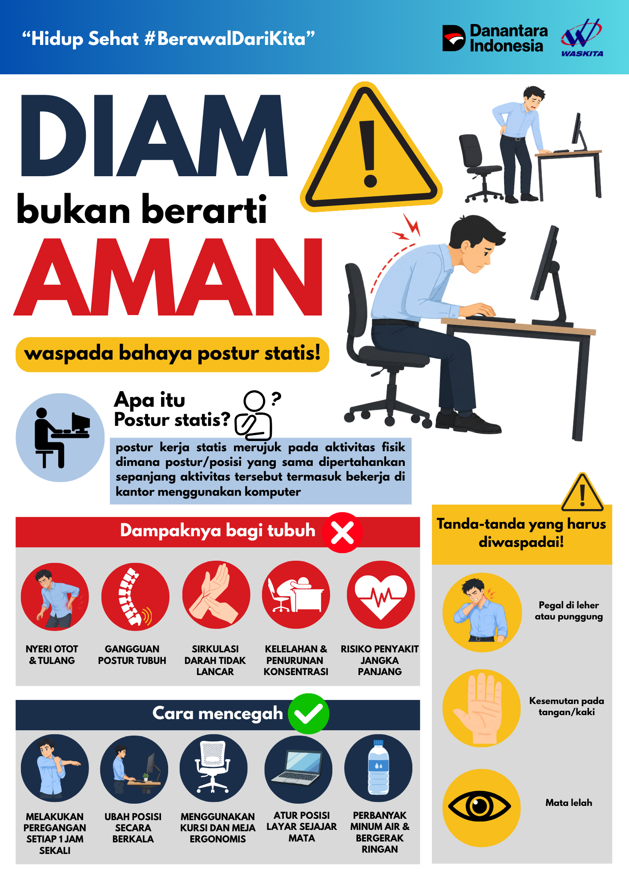

Belum melakukan pengujian sebelumnya.
Mendukung produktivitas dan kesejahteraan pegawai melalui panduan K3L, kampanye keselamatan, sistem pengingat istirahat (Metode 20-20-20), tes kelelahan, kalkulator BMI, serta layanan konsultasi terintegrasi.
Setiap 20 menit bekerja, alihkan pandangan ke objek sejauh 6 meter selama 20 detik. Terintegrasi dengan alarm pengingat dan notifikasi latar yang dapat dikonfigurasi.
Menjaga kenyamanan, keselamatan, dan kesehatan kerja melalui ergonomi, kesehatan mata, serta penerapan budaya 5R dan 3R.
Edukasi visual untuk menumbuhkan budaya Keselamatan dan Kesehatan Kerja (K3) demi terciptanya lingkungan kerja yang aman, sehat, dan senantiasa produktif bagi seluruh pegawai.

Luangkan waktu sejenak untuk melakukan peregangan. Ikuti gerakan dalam video ini untuk merelaksasikan otot-otot Anda, mengurangi kelelahan, dan menjaga kebugaran selama bekerja.
Kuesioner ini dirancang untuk membantu mengidentifikasi tingkat kelelahan kerja subjektif pekerja berdasarkan metode KAUPK2 Tipe I (Shift Pagi). Jawablah setiap pertanyaan secara jujur sesuai dengan kondisi fisik dan mental yang Anda rasakan saat ini.
Hitung Body Mass Index (Indeks Massa Tubuh) Anda untuk memantau status gizi dan menentukan rekomendasi kesehatan yang optimal sesuai standar medis.
Lengkapi formulir di samping dan tekan tombol "Hitung BMI" untuk melihat hasil analisis Anda secara langsung.
Pesan otomatis
| < 18,5 | Kekurangan Berat Badan | ||
| 18,5 – 24,9 | Normal (Ideal) | ||
| 25 – 29,9 | Kelebihan Berat Badan | ||
| 30 – 34,9 | Obesitas 1 | ||
| ≥ 35 | Obesitas 2 |
Memudahkan pekerja untuk berkonsultasi secara cepat terkait kondisi kesehatan, keluhan kerja, maupun kebutuhan layanan kesehatan kerja melalui WhatsApp.
Anda dapat langsung berkonsultasi jika mengalami satu atau beberapa kondisi berikut saat berada di lingkungan kerja:
Sakit kepala hebat, pusing, nyeri, atau ketidaknyamanan fisik mendadak.
Demam tinggi, mual, badan lemas, atau gejala kurang fit lainnya.
Mata lelah, sulit fokus, kantuk berlebih, atau fatigue ekstrem.
Nyeri punggung, leher, atau bahu akibat posisi kerja statis.
Tim paramedis kami siap membantu. Klik tombol di samping untuk segera terhubung ke nomor WhatsApp resmi Klinik Waskita Karya.